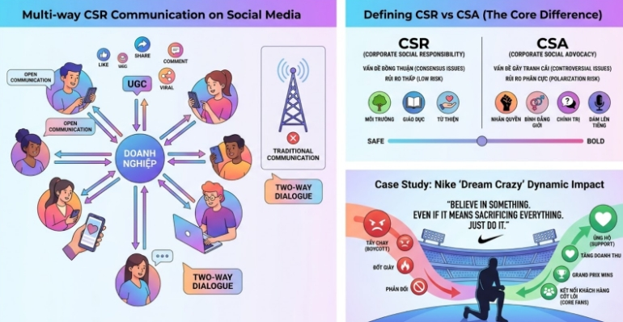

1. Truyền thông CSR và "Quyền năng" của Mạng Xã Hội
Bạn có bao giờ thắc mắc truyền thông CSR trên mạng xã hội khác gì so với truyền thống không? Điểm khác biệt "ăn tiền" nhất chính là sự tương tác đa chiều.
Thay vì chỉ phát đi thông cáo báo chí nhàm chán, mạng xã hội (Social Media) mang đến cho chiến dịch CSR những "siêu năng lực":
• Mở ra không gian truyền thông hai chiều: Thương hiệu có thể tương tác trực tiếp.
• Tận dụng nội dung "chính chủ": Dễ dàng lan tỏa thông qua các nội dung do chính người dùng tạo ra (UGC).
• Viral thần tốc: Sở hữu khả năng lan truyền và tạo ảnh hưởng trên diện rộng chỉ trong một thời gian ngắn.
• Bảo vệ hình ảnh: Hỗ trợ doanh nghiệp đắc lực trong việc xử lý khủng hoảng và xây dựng hình ảnh thương hiệu.
Nhưng "đời không như là mơ", sân chơi này cũng đầy rẫy thách thức:
• Vấn nạn tin giả bủa vây.
• Người tiêu dùng ngày càng khó tính và mang tâm lý hoài nghi.
• Bài toán khó nhằn giữa sự minh bạch và chiến lược thương hiệu.
2. Định nghĩa lại luật chơi: CSA là gì?
Nếu CSR (Corporate Social Responsibility) là những hành động trách nhiệm xã hội khá an toàn, thì CSA (Corporate Social Advocacy) lại là một "nước đi" táo bạo hơn rất nhiều.
• CSA "flex" điều gì? Đây là lúc các công ty công khai bày tỏ quan điểm về các vấn đề xã hội và chính trị đang gây tranh cãi (Rim et al., 2024).
• Sự khác biệt cốt lõi: CSA đưa ra quan điểm rõ ràng về một vấn đề cụ thể trong xã hội.
• Rủi ro "kép": Vì đụng chạm đến các vấn đề nhạy cảm, CSA có thể gây phân cực và tranh cãi, bởi không phải bên liên quan nào cũng sẽ đồng thuận với doanh nghiệp.
3. Case Study "Chấn Động" Làng Truyền Thông: NIKE x COLIN KAEPERNICK
Để minh họa rõ nhất cho CSA, nhóm tụi mình đã phân tích chiến dịch huyền thoại của nhà Nike.
Nhân dịp kỷ niệm 30 năm slogan "Just Do It", Nike đã tung ra chiến dịch "Dream Crazy" với gương mặt đại diện là cầu thủ Colin Kaepernick cùng thông điệp viral toàn cầu:
"Believe in something. Even if it means sacrificing everything. Just do it."
Dù đối mặt với làn sóng tẩy chay và tranh cãi dữ dội (vì Kaepernick từng quỳ gối khi hát quốc ca Mỹ để phản đối phân biệt chủng tộc), Nike vẫn kiên định với quan điểm của mình. Kết quả? Chiến dịch đã thắng lớn và ẵm trọn giải thưởng cao quý Grand Prix hạng mục Outdoor tại Liên hoan Sáng tạo Cannes Lions. Một minh chứng quá rõ ràng cho việc: Thà "mất lòng" một bộ phận, nhưng lại củng cố được tình yêu mãnh liệt từ những khách hàng cốt lõi!
Kết luận
Buổi học số 04 đã giúp nhóm tụi mình nhận ra rằng: Trong kỷ nguyên số, doanh nghiệp đôi khi không thể mãi đứng giữa. Việc dám "lên tiếng" (CSA) đi kèm rủi ro, nhưng nếu làm đúng, nó sẽ tạo ra những giá trị thương hiệu không thể đong đếm được.
